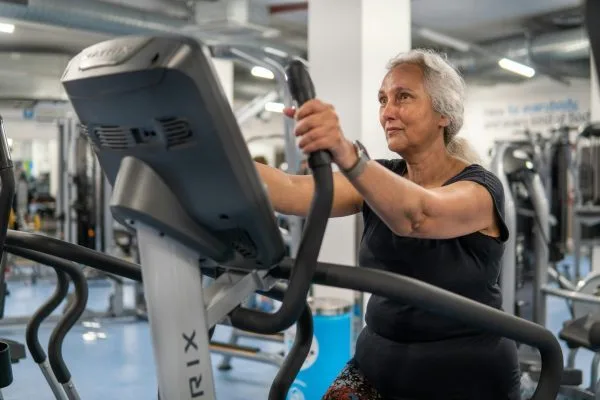
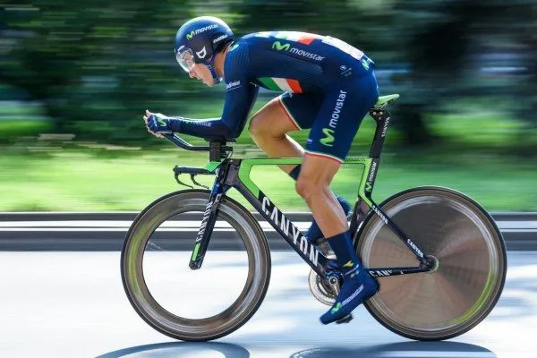
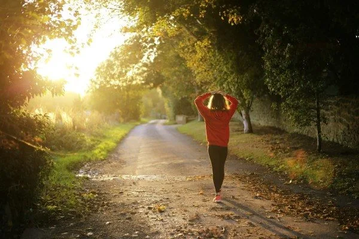

衝刺的力量
2026-09-28
衝刺訓練能招募快縮肌纖維、刺激生長激素分泌，應進行二十至三十秒高強度衝刺，間隔休息六十至九十秒。

30 篇文章
衝刺訓練能招募快縮肌纖維、刺激生長激素分泌，應進行二十至三十秒高強度衝刺，間隔休息六十至九十秒。

運動改善血脂的門檻遠低於傳統建議，每週約 60 分鐘中等強度活動就能顯著提升 HDL 並改善脂蛋白品質。

身體燃脂速度在中等強度時達最高峰，強度過高反而轉向消耗碳水，找到自己的甜蜜點比盲目衝高強度更有效燃脂。

2026 年 8 月的統合分析顯示規律爬樓梯者心血管死亡風險降低 39%，每天約爬 6 層樓效益最明顯，作者建議從一到兩層開始。

耐力運動增加粒線體數量有氧容量，阻力運動強化粒線體代謝功能，混合訓練對粒線體品質管控最佳。

消除脂肪肝的運動強度沒有想像中重要，中等強度有氧運動足以有效改善肝臟脂肪，比高強度訓練更可持續。

Valter Longo 的研究指出，50 至 65 歲高蛋白飲食與較高死亡率相關，因 mTOR 長期活化可能加速老化，65 歲以上則需吃夠蛋白質。

運動過量可能增加冠狀動脈斑塊的形成，但運動對心血管長期保護益處仍然明確，適度最為重要。

曾訓練的肌肉保留更多肌細胞核與表觀遺傳記憶，重新開始訓練時肌肉增長速度明顯快於初次學習者。

Zone 2和HIIT訓練目標不同，Zone 2建立粒線體基礎，HIIT提升最大攝氧量，兩者相輔相成。

40 歲後肌肉每年流失約 0.8% 至 1.0%，會拉低基礎代謝、增加血糖波動與胰島素阻抗風險，文中建議靠阻力訓練與足夠蛋白質守住肌肉。

GLP-1 藥物減重常伴隨肌肉流失，文中主張用藥期間每週至少兩次阻力訓練並攝取足夠蛋白質，讓肌肉分泌的肌肉動素接手，降低停藥後復胖。

HMB 是白胺酸的代謝產物，作者介紹它偏向防止肌肉流失、減少運動後損傷，適合肌少症長輩與減脂族群，每日常見劑量 3 公克。

作者修正過去的建議，認為吃蛋糕最好在高強度阻力訓練後 30 至 60 分鐘內，此時肌肉糖原缺口與 GLUT4 活性可讓糖分優先被肌肉吸收。

一項隨機對照交叉試驗發現，餐後僅 1 分鐘舒適步調上下樓梯就能降低血糖與胰島素，3 分鐘更能改善胰島素敏感度，受試者主要是健康年輕人。

一項 2025 年研究顯示，糖尿病前期患者在坐姿下規律做比目魚肌踮腳，血糖上升幅度平均降低約 32%，但樣本僅 10 人、仍屬初步結果。

飯後運動15分鐘比每天晨間空腹快走45分鐘更能有效控制血糖，能減少餐後血糖約40至50 mg/dL，HbA1c下降幅度優0.7%。

運動時的乳酸鹽是能量載體而非疲勞兇手，肌肉酸痛來自微損傷與炎症，提升乳酸閾值可靠有氧運動與高強度間歇訓練。

SMI（四肢肌肉量除以身高平方）比BMI更能反映真實肌肉量，男性應≥7.0 kg/m²、女性≥5.7 kg/m²，低於標準代表肌少症風險。

青花椰苗蘿蔔硫素含量遠高於成菜，能啟動Nrf2整條抗氧化路徑，調整腸道菌相並產生丁酸修復腸屏障，降低全身發炎。

運動誘發的鳶尾素激活脂肪棕色化、改善血糖代謝、抑制肌肉衰退、促進神經保護，HIIT運動對提升鳶尾素效果最顯著。

跳繩是非常有效的全身性運動，短短十分鐘可達到慢跑三十分鐘的訓練效果，成本低廉無須場地的選擇。

壺鈴訓練能同時訓練肌肉與心肺功能，短短十分鐘可達慢跑三十分鐘的訓練效果，是極高效率的運動。

肌酸是安全有效的補充品，能提升運動表現與認知功能，素食者補充可顯著改善記憶力，建議日攝取3-5克。

年長者堅持規律進行低至中度運動如跑步與走路能維持肌肉幹細胞含量與神經肌肉連接的完整性狀況。

研究顯示運動無法完全抵銷久坐的傷害，需要減少久坐時間而非只在下班後集中運動來補償其傷害效果。

走路作為低強度有氧運動使用脂肪作能量，能改善代謝和血糖控制，每天走路時間可累積達成，對長期健康有益。

研究顯示自行車手採行16:8間歇性斷食四週能減少相對脂肪11%並維持肌肉量，不影響有氧運動表現。

每週150分鐘的走路運動能降低心血管疾病風險35%，運動頻率比強度更重要，持之以恆潛移默化改善血脂。

女性運動員因能量不足導致飲食失調、無月經與骨質疏鬆的三合症，須透過增加營養攝取與減少訓練強度改善。